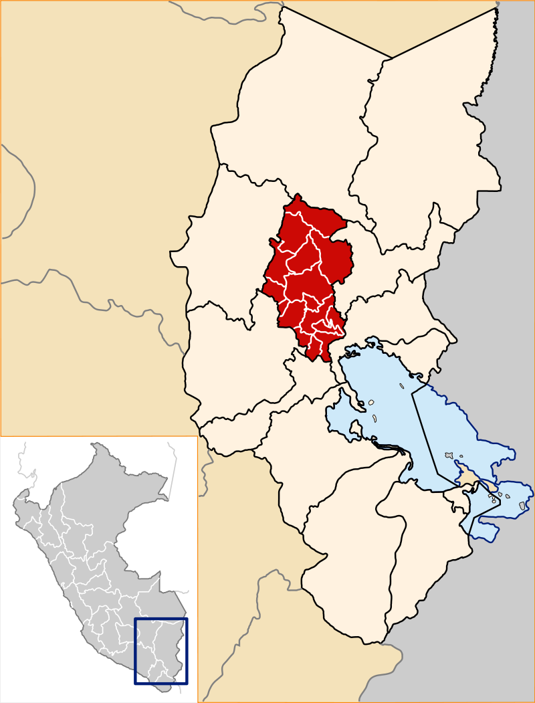
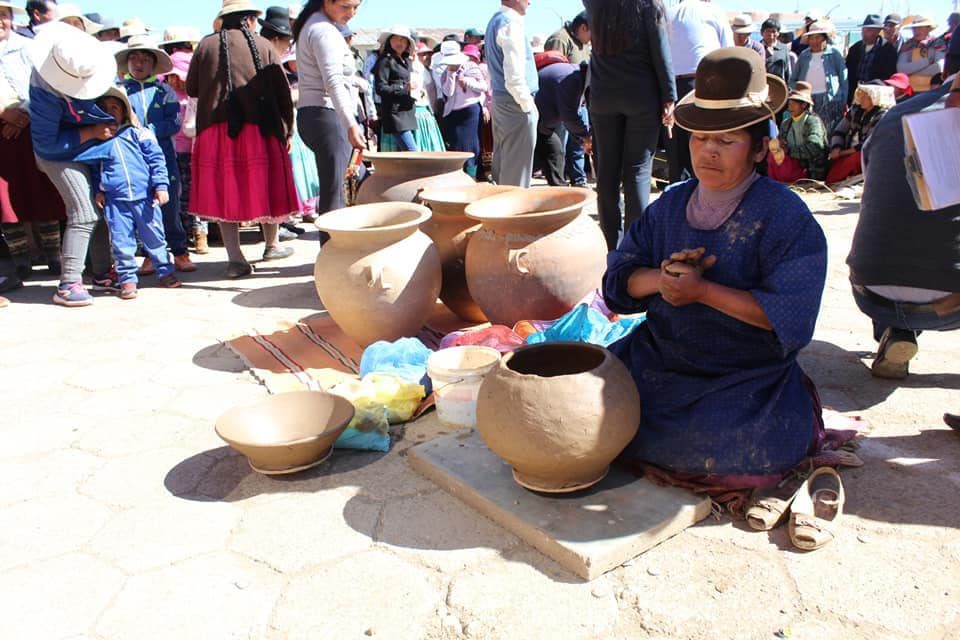

Historia
 Tirapata es un distrito de la provincia de Azángaro en el departamento peruano de Puno, bajo la administración del Gobierno regional de Puno. En el año 2007 tenía una población de 3 129 habitantes y una densidad poblacional de 15,7 personas por km². Abarca un área total de 198,73 km². El distrito fue creado por la Ley N.º 9840 el 10 de noviembre de 1943, en el primer gobierno del Presidente Manuel Prado Ugarteche.
Tirapata es un distrito de la provincia de Azángaro en el departamento peruano de Puno, bajo la administración del Gobierno regional de Puno. En el año 2007 tenía una población de 3 129 habitantes y una densidad poblacional de 15,7 personas por km². Abarca un área total de 198,73 km². El distrito fue creado por la Ley N.º 9840 el 10 de noviembre de 1943, en el primer gobierno del Presidente Manuel Prado Ugarteche.
Desde el punto de vista jerárquico de la Iglesia católica forma parte de la Diócesis de Puno, sufragánea de la Arquidiócesis de Arequipa.
Geografia

Tirapata se encuentra ubicado en las coordenadas 14°57′22″S 70°24′15″O. Según el INEI, Tirapata tiene una superficie total de 198,73 km². Este distrito se encuentra situado en el oeste de la Provincia de Azángaro, en la zona norte del departamento de Puno y en la parte sur del territorio peruano. Su capital Tirapata halla a una altura de 3.886 msnm
Artesania

Tradicionalmente la población es artesana inclusive algunos humanos se dedican a esta actividad productiva, la artesanía de arcilla es el arte grotesco tradicional en (alfarería) en arcilla en el distrito de Tirapata es único y más representativa en la elaboración de Chombas (Rak`i), en diferentes tamaños, como también a la artesanía en juguetería de Navidad, donde confeccionan figuras de animales, personajes navideños elaborados sobre la base de miles para luego ser pintados, dicha actividad es durante todo el año y con mayor frecuencia en las fiestas costumbristas el mismo que tiene gran demanda por los pobladores de Cuzco, Arequipa Juliaca.
Desde un punto de vista del proceso productivo la cerámica (alfarería) se clasifica en:
- A torno: Es más caro, debido a su fabricación requiere de un torno y un horno.
- De Molde: Es barato y su fabricación es rápida, y no tiene un fino acabado y presencia.
- A pulso: Es el más barato, en su fabricación se requiere de tiempo, donde es el más artístico y los clientes lo prefieren.
Resaltamos que sus moldes son elaborados por ellos mismos, los artesanos se sirven de motivos costumbristas, compran la tierra amarilla en pequeñas cantidades y la arcilla en gran proporción, dicho recurso natural encontramos en diferentes co0munidades del Distrito en grandes cantidades.